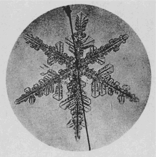

これは本当に天然に見られるあの美麗繊細極まる雪の結晶を実験室の中で人工で作る話である。零下三十度の低温室の中で、
六華の雪の結晶を作って顕微鏡で
覗き暮す生活は、残暑の苦熱に悩まされる人々には
羨ましく思われることかも知れない。
雪の結晶の研究を始めたのはもう五年も前の話であるが、あり合せの顕微鏡を廊下の吹き
晒しの所へ持ち出して、初めて完全な結晶を覗いて見た時の印象はなかなか忘れがたいものである。水晶の針を集めたような実物の結晶の
巧緻さは、普通の教科書などに出ている顕微鏡写真とはまるで違った感じであった。冷徹無比の結晶母体、鋭い
輪廓、その中に
鏤められた変化無限の花模様、それらが全くの透明で何らの濁りの色を含んでいないだけに、ちょっとその特殊の美しさは
比喩を見出すことが困難である。
その
後毎日のように顕微鏡を覗いている
中に、これほど美しいものが文字通り無数にあって、しかも
殆んど
誰の目にも止まらずに消えて行くのが
勿体ないような気がし出した。そして実験室の中で
何時でもこのような結晶が出来たら、雪の成因の研究などという問題を離れても、随分楽しいことであろうと考えて見た。
いずれにしてもこの雪の結晶は、高層の極めて温度の低い所で水蒸気が凝結して出来るものには違いないのだから、その
真似をすれば良いわけである。最初には銅板の円筒の長さ一メートル位のものを作ってそれを
冷して置いて、上から水蒸気を吹き込んで見た。しかしそれ位のことではなかなか雪は降らない。最初の冬はそんなことを試みている
中に明けてしまった。次の冬にはもっと小型の銅箱を作って、それを内部から液体空気で零下二十度位まで冷して置いて、その上に暖い水蒸気を送って見た。完全な六華の結晶は一応見切りをつけて、
先ず結晶の幾つかの枝をこの銅板の面から伸び出させようというつもりなのである。出来たものは、寒い朝
硝子窓に凍りつく霜の花のようなものばかりで、空中に伸び出る結晶の枝はどうしても出来ない。その中に第二の冬も見る見る過ぎ去ってしまった。
こんな事をしている中に、やはり雪のようなものは天然にこそ全く無造作に出来るものであるが、人工的に作ることはなかなか困難な仕事であろうという気がして来た。それには実験室内での失敗ということ以外に、その頃から行き始めた
十勝岳での体験も原因するのである。十勝岳の中腹で見られる雪の結晶は、札幌などで知られる結晶とはまた一段の
精緻さを見せているのであった。そしてその種類がまた実に多岐を極めていて、夢にも思い掛けなかったような不思議な形の結晶がいくらでも降って来るようなこともあった。
水晶の結晶のような六角の柱などは
勿論のこと、北極探検の際初めて発見されたというピラミッド型のものも再三見られた。時にはこれらの角柱の両端に六華の花が咲いて
鼓のような形になったもの、それが段々に
重って昔の
複葉飛行機のような形をしたものなどが全山を
埋め尽くすようなことも
稀ではなかった。こんな結晶を見暮していると、何時の間にか自然の神秘に圧倒されてしまって、こんな物を人工的に作ろうとする企てすら、何だか自然に対する
冒
のような気がして来るのであった。
第三年目の冬も惰性的に前の年の実験を
繰返していた。その中にふと気が付いて、
冷い銅板の面を上に逆さに置いて、その下に水を入れた器を置いて見た。水蒸気はその水面から蒸発して自然の対流で上方へ昇って銅板の面に凝結するのである。こうして見ると銅板の面からちらちらと白い粉が降り出した。顕微鏡で見ると、ちゃんと雪の結晶の片割れに似たものになっている。こんなことがどうしてもっと早く気がつかなかったのか。水蒸気を適当に、かつ結晶の
隅々まで行き渡らすには自然対流を用いるのが一番良いことは考えて見れば何でもないことであった。自然の場合だって天は上に、地は下にと
決っている。しかし下の物を上にしたり横のものを縦にしたりすることが、案外むつかしい場合のあるのは何も物理の研究と限ったものでもない。
四年目の冬は、前年の実験ですっかり元気を取戻して、同じような実験を進めて行ったのであるが、どうも今
一息というところで自然の雪の結晶のような美しいものにはならない。それも考えて見れば当然なのであって、自然の場合には空気が冷えていて、結晶熱は対流と
輻射で取り去られて結晶が生長するのである。それをするには室全体を
冷くするのが一番簡単である。天には銅板はないということに気が付くのにまた一年かかった次第である。それで問題は全く最初に返って、天然の雪の結晶の出来る通りに
真似をすれば良いという極めて平凡な結論に達したのである。
丁度今年の春から私の今勤めている北大に零下五十度まで下る低温室が出来た。その中で水蒸気の自然対流を適当に
按配して結晶を作って見ると、わけなく天然のものに負けないような
綺麗な雪の結晶の片割れが出来たのである。片割れというのは、結晶を金属か木の面に凝結させて作るので、本当の雪の結晶の六本の枝の
中二本か三本かが出来るのである。結晶形を論ずるだけなら枝が二本か三本あれば良いはずであるが、どうも六花の天然の結晶にそっくりの物を作らないと何だか気が済まぬような気もする。それで極めて細い毛の先にこの結晶を発達させることを助手のＳ君に頼んで置いた。

人工雪 ×12.5
二、三日して「
果して雪が出来ました」というＳ君の案内に急いで低温室の中へ入って見ると、なるほど
兎の毛の先に六花の結晶が白く光っている。そっと取り出して顕微鏡で覗いて見ると、この出来立ての雪は天然の雪よりも一層の見事さである。
ここまで来ると、後の仕事は極めて順調に運ぶのである。水の温度を色々に変えて、水蒸気の供給を加減すると、それぞれに
決った形の結晶が得られる。例えば水蒸気が多いと羽毛状に発達した繊細な結晶になり、中ほど位にすると綺麗な角板になる。そして思い切って水蒸気の供給を減らすと、極めて徐々に角柱状やピラミッド型の結晶が生長する。六角板の端々に羽毛状の枝の付いた結晶が天然にはよく見られるのであるが、このような結晶を作るには先ず初めに角板を作って置いて、それから急に水温を高めてその端々に羽毛状の枝を付けて行けば良い。鼓型の結晶などが巧く出来たりすると、薄暗い低温室の中で凍った指先に白い息を吹きかけながら、思わずにやりとすることもある。面白いことにはこうして出来る結晶は大抵天然の雪と同じ位の大きさのものである。一つ手の
平位の大きさの雪を作って見たいと思うがなかなか出来ない。
この仕事で一つ困ることは健康の問題である。外の気温が高くなると、いくら毛皮の防寒服に身を固めていても、五十度以上の急激な気温の変化に始終
遭っていてはどうもいけないようである。自分は
真先に降参してしまって、後は若い元気な助手や学生の人たちに任してしまった。
この仕事は面白いことは実に面白いが、ただ一つ涼し過ぎるのが欠点であるなどと、八月の真中に友人に話して羨しがらせているが、実はそう易しい実験でもないのである。
（昭和十一年九月十七、十八日）